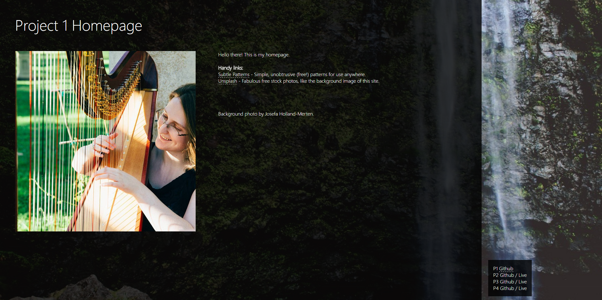
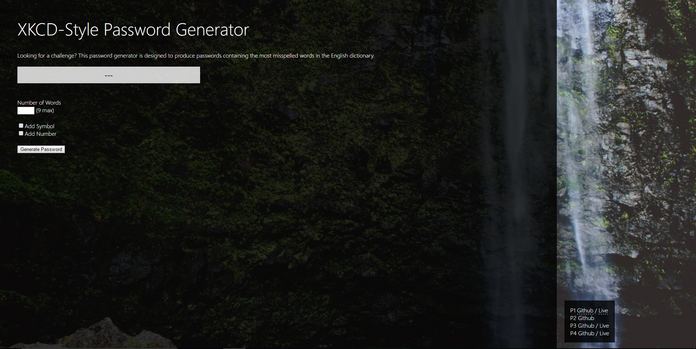
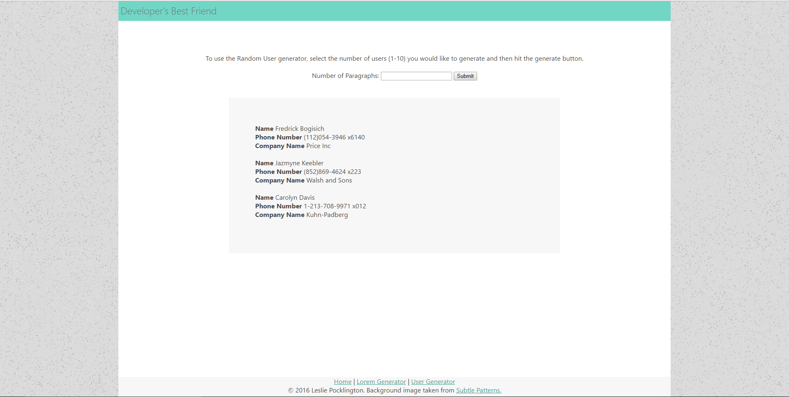
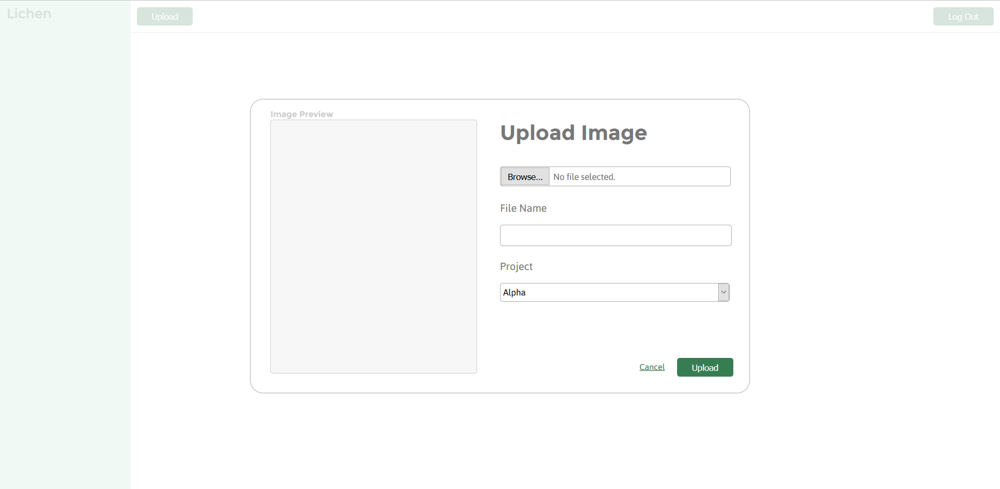
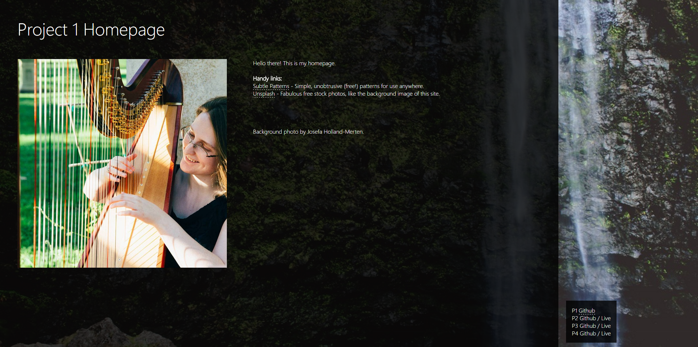
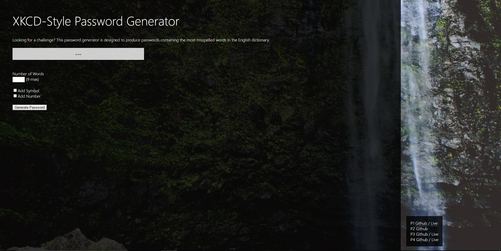
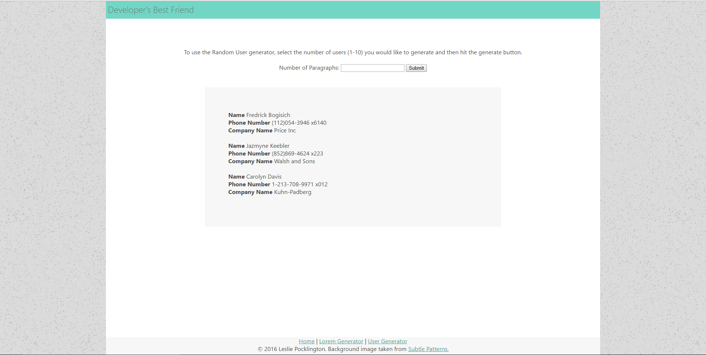
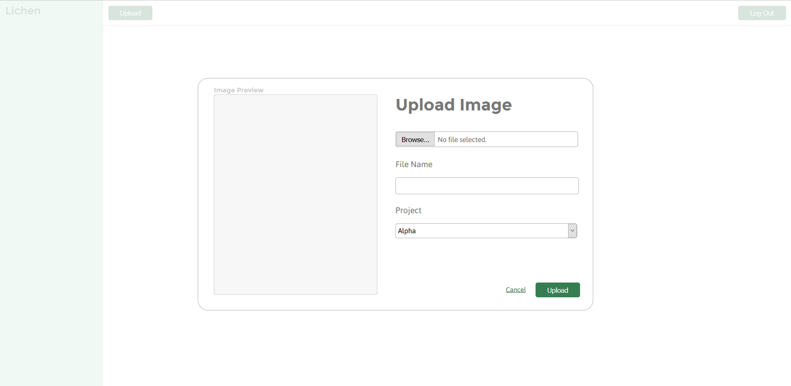

Projects
This page is currently reserved for showing off some of the projects I did for another class, Dynamic Web Applications. Click on a thumbnail to visit each site. These projects are best viewed in Firefox.
   This page is currently reserved for showing off some of the projects I did for another class, Dynamic Web Applications. Click on a thumbnail to visit each site. These projects are best viewed in Firefox.
   